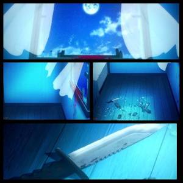
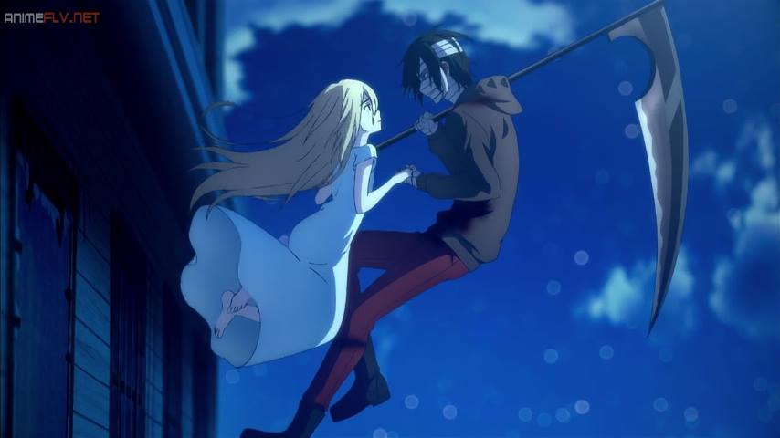
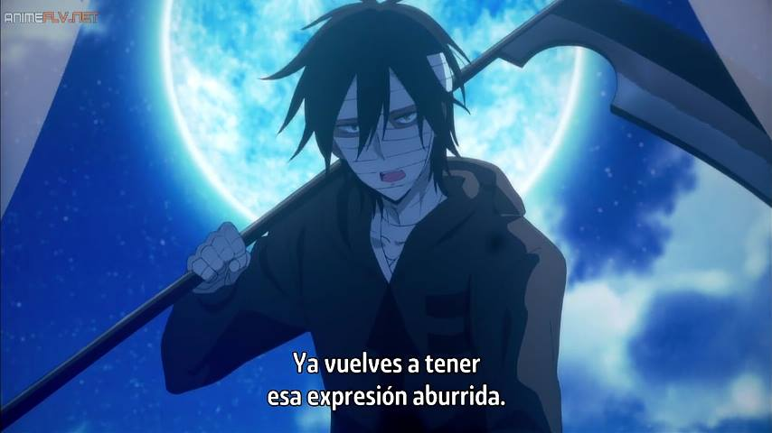
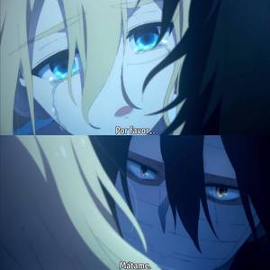

Satsuruki No Tenshi
Antes de comenzar con las teorías, quiero aclarar que me voy a basar en el canon que obviamente es el juego, pudiendo añadir elementos que se encuentran en el anime. He estudiado criminalística y eso también me ha ayudado a tener un punto de vista más objetivo del anime, aunque por supuesto esto es ficción y solo el autor de la obra tiene la absoluta verdad. ;)
Teoría 1 Rachel se Suicida / se imagina todo:
Rachel como sufre de delirio, se imagina que Zack la mata mientras se apuñala con el cuchillo y la salta por la ventana. Otro escenario es que rompe los barrotes de la ventana y se lanza en ella. O simplemente ella se imaginó que Zack la buscaba para matarla debido a su delirio o falta de sueño. Es lo menos probable y te diré por qué. Rachel no se pudo haber suicidado por el simple hecho de que la ventana estaba sellada desde el exterior por barrotes, y sumando al capítulo anterior del anime donde ella se trata de romper las rejas para que puedan escapar del edificio mientras se incendia, claramente se nota en "poca fuerza y torpeza", aunque en el juego es algo diferente, no altera en absoluto la trama principal, es imposible que ella misma cortara los barrotes con un cuchillo viejo y desgastado. ¿Cuál es la razón por la cual usted se suicidaría?, no tendrá un sentido, gastar tiempo y fuerzas en intentar romper una ventana BLINDADA (¿En una habitación adaptada para personas con desórdenes mentales y traumas? ) pudiendo directamente apuñalarse con el cuchillo? Una persona cuando se suicida no planea, funciona debido a los deseos que tiene en ese momento con sus pensamientos. Otros afirman que ella imaginó todo, debido a que en el anime nos muestra que ella no dormía. Esto solo se menciona en el anime. Enserio? ¿Se imaginó que la policía también los alcanzó cuando a Zack estaba esperándola en la ventana? Incluso, ella nunca ha visto cómo era el cabello de Zack ( largo o corto), siempre se ha dejado ver algunos mechones de cabello en su frente pero hasta allí, ¿Ella realmente tenía la referencia cómo es Zack sin capucha? También se imaginó los gritos de afuera? lol en el juego se muestra como ella misma cierra y refuerza la puerta de la habitación para que su psiquiatra no la abra junto con la policía mientras Zack va a buscarla. Por lo que esta parte también está totalmente descartada. -Ella es fuertemente religiosa, en el anime y el juego se deja en el lado de CADA CAPITULO que está en contra del suicidio, que solo quiere que Zack la mate. -Ella misma afirma que quiere que su muerte fuera deseada, la idea del suicidio no aplica. - Lo más importante el cuchillo. La única sangre que vemos está en el marco de la ventana por el juego sabemos que es de Zack cuando quedó herido por escapar de la cárcel, y también podría ser por los restos de vidrio de la ventana. -Zack realmente estuvo allí con ella, los restos de vidrio esparcidos en el suelo de la habitación deja ver que la ventana fue destruida desde el exterior, además del corte limpio de los barrotes, Rachel JAMÁS y en su mejor condición física hubiera podido hacer eso. Con lo pequeña que es le hubiera bastado solo romper dos para escapar xDl. También la doctora abriendo la puerta junto con la policía demuestra que Zack estuvo allí con ella.
Teoría 2 Ambos Mueren:
Zack busca a Rachel y ambos se tiran desde la ventana cumpliendo su juramento. Es posible que la apuñala con la guadaña, mientras que él y ella muere por el impacto. O simplemente la mata y él al caer es asesinado por la policía. A diferencia de la anterior, ésta teoría está abierta a toda la posibilidad, el autor no quiso definir el capítulo para que los fanáticos puedan disfrutar de diferentes alternativas, de hecho esa es la esencia de todo juego RPG (aunque hay gente que se imagina cada cosa) lol xD En particular, no estoy de acuerdo con esta teoría y acá paso a explicar. Hay que apegarnos a lo que el creador está mostrando en la historia y en cada capítulo. Tanto en el anime como en el juego te dejan ver las cosas y te las repiten en cada momento (quizás hasta llegar al punto de exagerar) como: la promesa de Zack y Rachel, que Rachel no acepta un suicidio, que Zack odia las Mentira y siempre consigue lo que quiere, además de que fue quemado, herido de bala, electrocutado, apuñalado hasta las tripas por su guadaña, perdió como 10 litros de sangre y aún así el hombre sigue en pie, en fin ... el chico es prácticamente inmortal y el autor lo hizo así con toda la intención del mundo sabiendo lo irreal que era. Sinceramente ustedes creen que con TODO LO QUE SUFRIÓ en el edificio Zack simplemente iba a morir por la caída de un piso no tan alto? Reallyd? Además, tenía una nueva guadaña (mas adelante explico cómo fue que la obtuvo), fácilmente y gracias a sus instintos, podría haber cargado a Rachel y trepar por las paredes o los árboles. ¿Qué si en el anime salen flotando? Enserio chicos ... cuantas veces no hemos visto una escena emocional donde los protagonistas flotan lentamente mientras que el aura y el fondo están a propósito para que la escena sea hermosa? Mejor no sigo… -.- U El que flotaran solo lo muestra en el anime, en el juego no sucede.
Teoría 3 Logran escapar y cumplir su promesa:
Zack logra escapar con Rachel de la policía, ellos están juntos hasta que Rachel le muestre su mejor expresión y la mate… quizás pasen muchos años juntos antes de que suceda… No es fantasía, y no, tampoco es porque no quiera aceptar la verdad. De hecho para mí, la segunda teoría es igual que incluso más hermosa, un final estilo Romeo y Julieta, pero no… esto no es un shojo. Descartando todos los escenarios anteriores y una vez más guiándonos por lo que el autor nos muestra con tanto empeño en cada capítulo del juego y anime, Zack le promete a Rachel que la va a buscar para matarla. Enserio acá tengo que hacer un paréntesis, me quito el sombrero con este chico, sin duda vemos su evolución como personaje, madurez y superación, hay un dicho famoso que dice “los hombre verdaderos no se excusan”, este hombre tiene una sinceridad crónica y no sólo eso su palabra es pura, es verídica, el no miente, es la clase de persona que te da confianza sus palabras y actos. El mismo sacerdote Gray nos hace ver que es un ser puro, Zack hace las cosas porque quiere, sin pensar demasiado ni el por qué. Odia las mentiras con todo su ser y es allí donde está la fuerza, sobrevivió y vivió por Rachel, le dio su palabra. “Zack: Las cárceles se hicieron para escapar” (Traducción oficial del juego) A todo lo que sobrevivió en el edificio, y sumado a su vida anterior de asesino, éste chico fácilmente siempre se burló de la policía, qué es una cárcel para él? Nada, el mismo afirma que se hicieron para escapar, por lo que nos da a entender que ya ha pasado muchas veces por esto. Hay un punto a tener en cuenta, el sacerdote Gray, su cuerpo fue uno de los que no encontraron juntos a los restos del edificio por lo que nos da una alta seguridad de que quedó con vida. En el juego y anime lo dejan ver como un hombre misterioso, no se sabe nada de él sólo que creo ese edificio y recluto a sus “ángeles” simulando ser Dios. No dudo en que conocía todos los atajos. Gray fue el cerebro de todo, y debido a sus últimas palabras tanto como en el juego y el anime (insisto que en el juego se ven más cosas) fácilmente pudo haber escapado cuando la torre fue destruida. Él estimaba y también tenía una deuda con Zack y lo ayudo a escapar con Rachel; a lo que quiero llegar es que éste hombre salvó a Zack de su ejecución. En toda ejecución se necesita la presencia de una entidad religiosa para darle validez a la sentencia y hacer cumplir la voluntad también del acusado. Pudo haber ayudado a Zack a escapar, tal vez él fue quien le dio una nueva guadaña, aunque tampoco es seguro, de hecho tampoco se explica como Zack tuvo la anterior así que es un misterio xD (el dato de la guadaña es irrelevante si murió o no). Tampoco niego el hecho de quizás esto no sucedió. Zack pudo haber escapado por sí solo gracias a sus instintos y su fuerza bruta. Él tenía ya experiencia escapando de la policía. “Ellos se fueron para nunca ser más vistos…” (Traducción oficial del juego) Los cadáveres se ven, Zack no mató a Rachel en el momento que la buscó porque él mismo dice que su expresión es aburrida, no se la hubiera jugado todas salvándola del edificio, entregándose a las autoridades, para matarla apenas la viera con esa expresión aburrida. Enserio este chico necesita de ella. No creo que fuera algo romántico, el autor explicó que era más que eso, aunque tampoco negó que pudiera ser romance. En resumen una prueba de lo hablado anteriormente es la sangre en el marco de la ventana, le pertenece a Zack obviamente no pudo quedar ileso al escapar, también se muestra que no es salpicadura, por lo que nos deja entender que ella no se mató ni la mató en ese momento. Rachel dejó su cuchillo en la habitación antes de saltar y los restos de sangre de Zack en la ventana, fue lo único que dejaron como prueba. Ella ya no necesita ese cuchillo para vivir y recordarlo, ella ya estaba con él. El no miente. "Entonces deja de llorar y sonríe..." ( Traducción oficial del juego) Enserio... Zack y Rachel son personas con desordenes mentales, la frase "quiero que me mates" en su juramento, es su forma de decir que se extrañan, su excusa perfecta para seguir juntos. Zack la tiene atada a él con una promesa que se convirtió en una excusa, y Rachel siente lo mismo. Mi resumen, Zack regresó como todo un PRO, renovado (por primera vez lo vemos sin su capucha y con una guadaña nueva) mató a quien quiera que se encontró en su camino (quizás la doctora aunque sea en el anime xD) rescató a Rachel fueron felices y comieron perdices xD! La escena final del juego donde la doctora junto con la policía que logran abrir la puerta se quedan mirando la ventana es una muestra que ellos escaparon. Escribo esto porque surgió una gran confusión con el anime, no colocaron cosas que son claves para entender que ellos SÍ escaparon y quedó como si ambos su hubieran muerto al mas estilo Romeo y Julieta. Recordemos que el anime es una ADAPTACIÓN no es la copia del juego animado, el estudio es libre de agregar y quitar cosas, es parte de su sello. Igual se agradece lo que hicieron, el capítulo final la calidad de imagen era hermosa.
